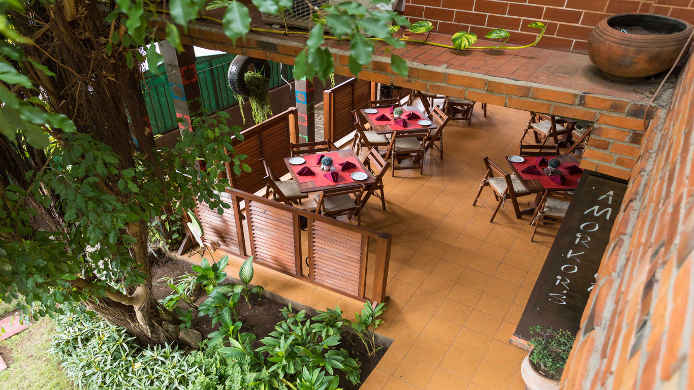
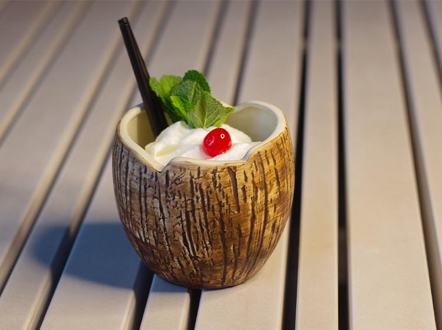

Why Accra?
Accra, the city of golden beaches
Accra is a city where local traditions turn the celebration of life—and the afterlife—into world-class art. In the vibrant coastal suburb of Teshie-Nungua, local craftsmen are famous for creating "fantasy coffins" intricately shaped like cars, fish, airplanes, or even giant chili peppers to honour a person's life passions. The lively atmosphere continues onto the shores of Labadi Beach, where weekends come alive with horseback riding, energetic drumming, and fresh seafood along the Atlantic.
If you want to step directly into Accra's storied past, the coastal neighbourhood of Jamestown is where the city's modern narrative truly began. Originally emerging in the 17th century around colonial trading forts, this historic district is famous for its striking, red-and-white striped Jamestown Lighthouse which towers 28 meters above the Atlantic. Today, the area is a beautiful testament to resilience, functioning as a bustling Ga fishing community where the historic streets double as open-air canvases for vibrant street art.
Restaurants
My favourite food spots in Accra

Buka Restaurant
Buka, as it is popularly referred to, was set up to cater to the middle income business community and the discerning international traveller.
Address
10th Street, Osu Accra, Ghana
What they say about Buka
"Great food, serene atmosphere. Loved how they make you feel like you're in a Ghanaian home."

Tunnel Lounge
The Accra-based Tunnel Lounge is a premier restaurant and lounge that blends warmth, sophistication, and a perfect ambiance to offer an extraordinary experience.
Address
45 Kofi Annan Street, Airport Residential Area, Accra-Ghana
What they say about Tunnel Lounge
"Great spot to have dinner or party when in Accra."

Zen Garden
Zen Garden, voted Ghana's best live venue operates as a restaurant and live music venue, open every day from 8am until after midnight.
Address
Orphan Crescent, Labone, OS1937, Accra, Ghana
What they say about Zen Garden
"The food was great. Local Tilapia with banku is a must try here"